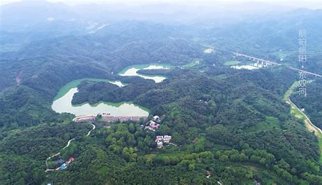

信阳概况

信阳是中国河南省南部的一座历史悠久的城市，素有“北国江南，江南北国”之称。
信阳市，河南省辖地级市，位于河南省南部，鄂、豫、皖三省交界处 ， 豫南地区重要的交通枢纽城市，地势南高北低，西部和南部是由桐柏山、大别山构成的豫南山地，中部为丘陵岗地，北部为黄淮平原和洼地，属亚热带向暖温带过渡地区，季风气候明显； 总面积18916平方千米。截至2023年末，信阳市下辖2个区、8个县， 常住人口604.80万人。
宋太平兴国元年（976年），因避宋太宗赵光义之讳，改义阳军为信阳军，称信阳军，领信阳、罗山2县，这是信阳作为地名在历史上首次出现；1998年6月，设立地级信阳市。信阳历史文化特征兼具楚文化和中原文化，是中国南北地理、气候过渡带和豫楚文化融合区，是中华姓氏归宗朝祖和海内外客家人寻根探源之地。地处大别山革命老区核心区域，被誉为“ 红军的摇篮、将军的故乡”，又被誉为山水茶都、“ 中国毛尖之都”。是 孙叔敖、春申君、司马光、郑成功等历史名人的故乡，孔子周游列国的终点。市境内有 鸡公山、南湾湖、出山店水库、灵山寺、西九华山等风景名胜。
2023年，信阳市 生产总值2959.40亿元，按可比价格计算，同比 增长2.5%。